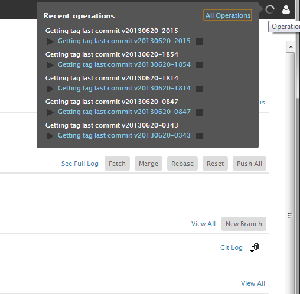
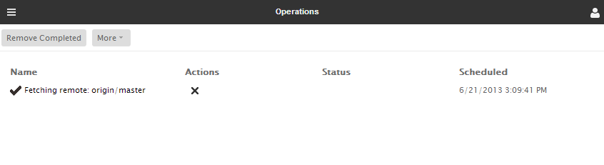

The Operations page shows progress on all background tasks that are occurring on remote servers associated with your Orion account. For example, if you start a Git clone operation, or an SFTP transfer, progress and results for these operations are shown on this page. You can open the Operations page from any page by using the Ctrl+Shift+O keyboard shortcut.
Each page also has a progress popup available by clicking the Progress icon on the toolbar. The icon appears when there are background operations running, or when there is status information to report from a background operation. This popup lets you know about current and recent operations in this and other pages, and provides an All Operations link to get to the Operations page.

The Operations page itself shows the status and result of all recent background operations. You can clear progress for individual operations, or remove all completed operations via the toolbar.

This document is maintained in a collaborative wiki. If you wish to update or modify this document please visit http://wiki.eclipse.org/Orion/Documentation/User_Guide/Reference/Operations_page